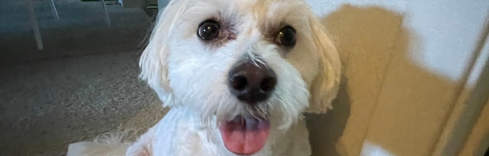

Entry #3
10 Intriguing Photographs to Teach Close Reading and Visual Thinking Skills by Michael Gonchar gave me very useful ideas and photographs to teach us how to thoughtfully analyze details through visual and written media. A tip that stuck out to me was to build on other’s observations. I think this a great idea if you ever get stuck or want to connect with other people. Listening to other people’s ideas or observations allows you to view things in a variety of perspectives. I definitely believe that it helps others expand their knowledge of the world. Even if you do not know something, using your curiosity can help lead you to an answer or fun fact. I think doing this kind of activity with others makes it more fun and helps build connections between similar thoughts or perceptions.